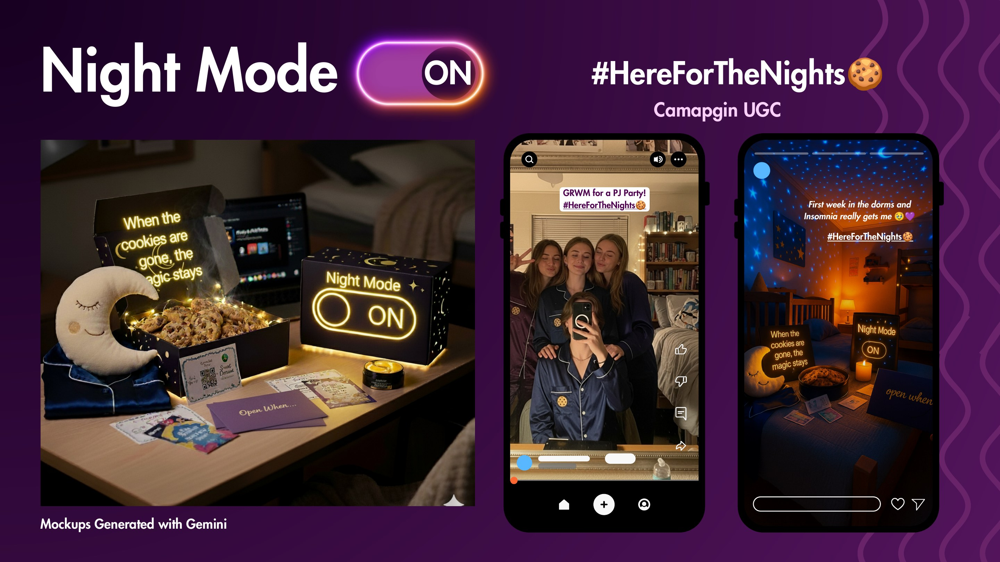
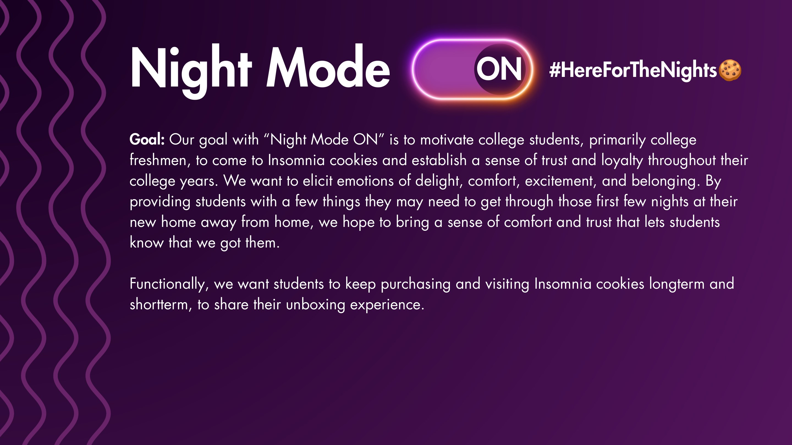

Insomnia Cookies — Night Mode
A welcome kit that turns the first lonely nights of college into comfort.

Freshman nights can feel longer than freshman days.
New dorm rooms, missing routines and distance from home become most visible after the lights go out. Insomnia already owns late-night delivery; the opportunity was to own late-night reassurance.

Comfort becomes trust when it arrives before the craving.
Students remember the brand that understands what the moment feels like, not only what they want to eat. A useful gesture can turn a first purchase into a relationship.
Night Mode ON.
Warm cookies arrive with a Moon plush, silk pajamas, an eye mask, 'Open When…' cards, coupons and a Study & Chill playlist. The empty box transforms with string lights into a dorm-room night light.

#HereForTheNights.
The kit creates an unboxing moment students can share while every component keeps working afterward—building comfort, repeat visits and a sense that Insomnia is present all semester.
From thought
to touchpoint.
- Welcome-kit concept
- Transforming package
- UGC framework
- Retention strategy
- Campaign hashtag
“A useful brand experience can be both acquisition and care: the emotional value is what makes the commercial behavior last.”